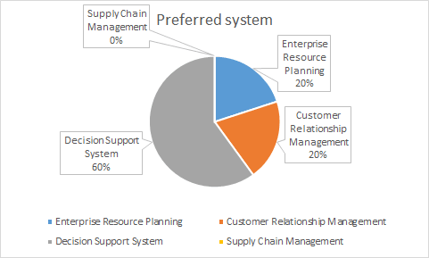
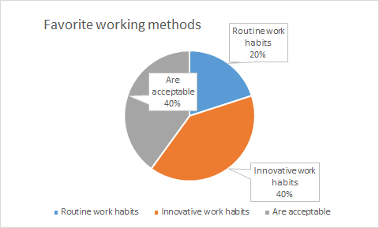
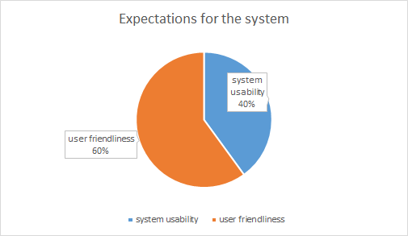

Key findings from our survey on customer business demands
Our survey results show that DSS is the most popular choice among customers when asked which system they want to use, indicating a high demand for decision-making systems.
Our survey also found that only a few customers preferred to maintain their current workflow, when asked whether they would accept workflow optimization in a new system.
Most of our survey respondents expressed a preference for simple and familiar operation when it comes to their preferred operating system, IT equipment, and system interface. They hope that any new system will also be more user-friendly.